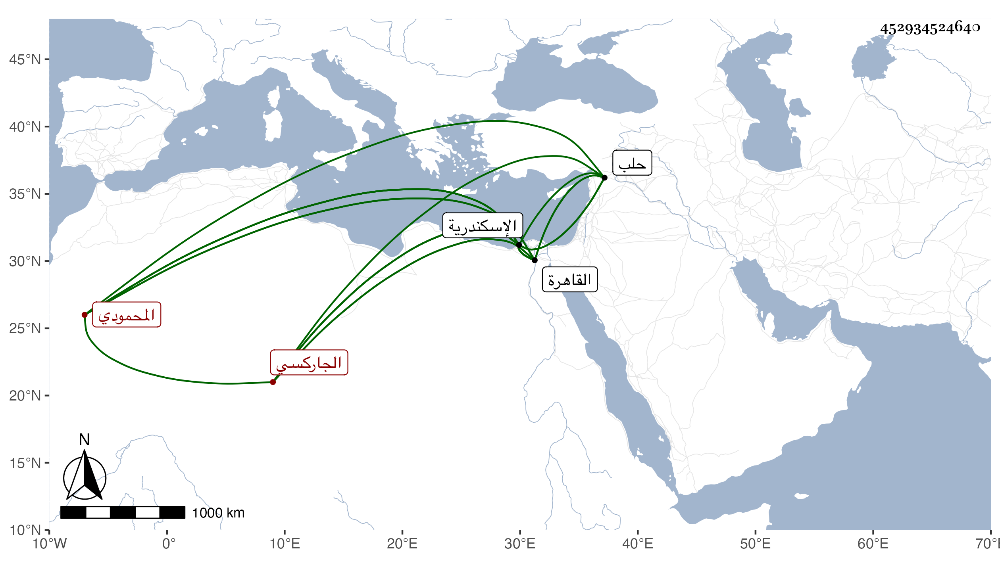

0902Sakhawi.DawLamic.ITO20230111-ara1.EIS1600.452934524640
Biography ID: 452934524640
827
دولات باي الجاركسي المحمودي نسبة لخواجا محمود دجالبه لاسكندرية المؤيدي لكونه أخذه من سيده نائب اسكندرية أقبردي المنقار وأعتقه وأخرج له خيلا ثم جعله خاصكيا ثم خازندارا ثم صار ساقيا إلى أن أخرجه الأشرف منها واستمر خاصكيا مدة فلما صاهر جانما قريب الأشرف صار بسفارته أمير عشرة ورأس نوبة ، ثم جعله الظاهر في أول تملكه أمير طبلخاناه وأميراخور ثاني ثم بعد أشهر بعد أسنبغا الطياري دوادارا ثانيا فباشرها بحرمة وافرة وكلمة نافذة وازدحم الناس ببابه لقضاء مآربهم فأثرى ونالته السعادة الدنيوية وأنشأ الاملاك الهائلة واقتنى الخيول المسومة وغيرها من التحف وعظم في الدولة ، وسافر أمير المحمل في سنة تسع وأربعين ثم صار في سنة ثلاث وخمسين أحد المقدمين بعد تمراز القرمشي ودام فيها إلى أن استقر في الدوادارية الكبرى عوض قانباي الجركسي بمال وعد به ولذلك انحط قدره وانحل برمه وصار السلطان في كل قليل يرشحه لنيابة حلب وهو يكرر الاستعفاء إلى أن عينه لامرة حج المحمل في سنة ست وخمسين ، وحج في تجمل زائد مع كونه لم يتناول من السلطان ما جرت عادة أمراء الحج به هذا وقد أعطاه في تلك الحجة عشرة آلاف دينار وسار سيرة حسنة جدا وكنت ممن رجع في ركبه ورأيت من حشمته ورفقه عجبا ، واتفق في يوم نزوله وله بركة الحاج خلع الظاهر نفسه واستقرار ولده فطلع وسلم على المنصور فخلع عليه وعلى ولديه ثم خرج من عنده وتوجه للظاهر فسلم عليه ولم يلبث أن قبض عليه المنصور في أثناء صفر وحبسه باسكندرية ثم أطلقه الأشرف في أثناء الشهر الذي يليه بعد نحو شهر وقدم القاهرة في سابع عشره وأنعم عليه بعد ثلاثة أيام بتقدمة فما كان بأسرع من مرضه فأقام أياما ثم مات في يوم السبت مستهل جمادى الثانية سنة سبع وخمسين ودفن من يومه بالصحراء خارج القاهرة ، وكان أميرا جليلا معظما في الدول مهابا وقورا حسن الشكالة طويل القامة رشيقا عارفا بأنواع الفروسية ومقالبة الملوك ، جماعا للأموال والخيول والتحف ، كثير الأدب والحشمة عظيم الحرمة على المماليك وحواشيه ، متجملا في ملبسه ومركبه ومماليكه ، كل هذا مع العقل وجودة الرأي والتدبير واعتقاده في الصالحين والفقهاء وتعظيمهم وتقريبهم وكثرة بره لهم لا سيما الفقراء من الطائفتين ، وله مآثر حسنة منها مكتب للايتام وسبيل في جامع الحاكم مع قيامه على الولوي بن تقي الدين البلقيني حتى نفذ وصية والده بعمارة ميضأة الجامع المذكور ، وربما يوصف بالبخل والامساك وكأنه لكونه لا يضع الشيء إلا في مستحقه وقد عظم بأخرة وتحدث الناس بسلطنته بحيث ثقل على الظاهر ثم على ابنه بل ندم الأشرف على اطلاقه وخافه فعاجلته المنية بحيث ظن بعضهم انه سم ومما نقم عليه ولايته نظر البيبرسية ومناكدته لشيخنا وقبل ذلك ولاية الطيبرسية ونحوها ، وبالجملة فكان به تجمل في الزمان رحمه الله وعفا عنه .
